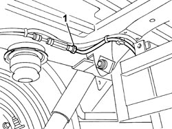
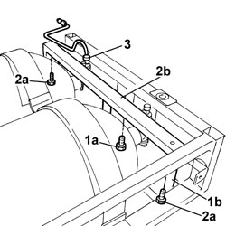

1042A51 RECHARGE/SUPPLY PIPE FROM SUPPLEMENTARY CNG CANISTER SOLENOID VALVES TO 2-WAY REAR FITTING - R.R.
- Path
- Procedures > 10 ENGINE UNIT > 1042 METHANE GAS CANNISTER AND TUBES > 1042A METHANE GAS CANNISTER AND TUBES FOR RE-CHARGING > 1042A51 RECHARGE/SUPPLY PIPE FROM SUPPLEMENTARY CNG CANISTER SOLENOID VALVES TO 2-WAY REAR FITTING - R.R.
- Kind
- repair procedure (removal / refitting; the operation number is the code)
- Applies to
- engines: 2.0 16V; all production periods
- Interactive page
- https://sloeber94.github.io/elrnDB-fDct/en/#/244002602
Applies to: engines: 2.0 16V; all production periods
 Removing
Removing
 Refitting
RefittingPosition the vehicle on the lift.
Disconnect the negative battery terminal.
Op. 1042A02 C.N.G. - FUEL SYSTEM SAFETY CHECK
Op. 1042E61 SUPPLEMENTARY CNG CYLINDER UNIT PROTECTION SEAL - R.R.
1. Undo the connector from the rear two-way connector.

Applies to: engines: 2.0 16V; all production periods
1. Undo the fixing bolts (1a) and remove the partition (1b).
2. Undo the fixing bolts (2a) and remove the upper crossmember (2b).
3. Undo the connector pipe from the solenoid valve, release it from the securing bands and remove it.

Applies to: engines: 2.0 16V; all production periods
Refitting
RemovingPosition the connector pipe and tighten the connector on the solenoid valve to the recommended torque.
Value daNm | Fastening | Component | Ø | |
|---|---|---|---|---|
- | 2.8 | Connector | - | - |
Position the upper crossmember and tighten the fixing bolts.
Fit the partition and tighten the fixing bolts.
Tighten the connector for the pipe to the rear two-way connector to the recommended torque.
Value daNm | Fastening | Component | Ø | |
|---|---|---|---|---|
- | 2.8 | Connector | - | - |
Op. 1042E61 SUPPLEMENTARY CNG CYLINDER UNIT PROTECTION SEAL - R.R.
Connect the negative battery terminal.
Remove the vehicle from the lift.